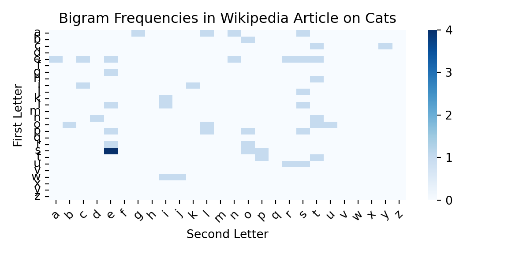
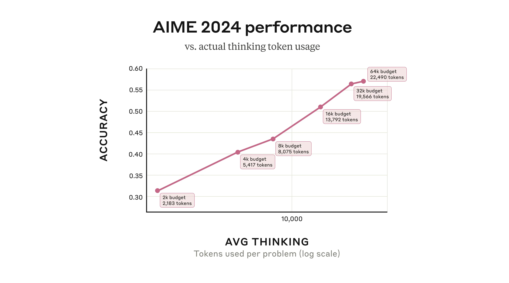

Large Language Models (LLMs) have emerged as one of the most profound breakthroughs in artificial intelligence, fundamentally reshaping our relationship with technology. These models can write poetry that moves us to tears, generate computer code that solves complex problems, translate languages with nuanced understanding, and hold conversations with a fluency that often feels remarkably human. But how do they work? What is the magic behind the curtain that makes a computer suddenly seem to understand the subtleties of human language and thought?
At their core, LLMs are powered by the Transformer architecture, which hinges on a concept called attention—the ability to weigh the importance of different words in a sentence to grasp context and meaning. Imagine if you could instantly understand not just what someone is saying, but also catch every subtle reference, every implied connection, every hidden meaning between the lines. This is what attention mechanisms give to artificial intelligence. This chapter will journey from the foundational ideas of attention to the colossal models that are defining our modern world, exploring not just how they work, but how they think.
25.1 Adding One Word at a Time
The first application of LLMs that most people encounter is text generation. You provide a prompt, and the model generates a continuation that often feels remarkably coherent and relevant. This ability to produce text that mimics human writing is one of the most striking features of LLMs. But how does it achieve this? And why does it work so well?
At its core, an LLM is designed to predict the next token in a sequence based on the context provided by the preceding tokens. This process involves generating a “reasonable continuation” of the input text, where “reasonable” means consistent with patterns observed in vast amounts of human-written text, such as books, articles, and websites. For example, given the prompt “The best thing about AI is its ability to,” the model analyzes patterns from its training data to predict likely continuations. It doesn’t simply match literal text; instead, it evaluates semantic and contextual similarities to produce a ranked list of possible next tokens along with their probabilities.
This mechanism allows LLMs to generate text that aligns with human expectations, leveraging their ability to understand context and meaning at a deep level. By iteratively predicting and appending tokens, the model constructs coherent and meaningful responses that often feel indistinguishable from human writing. Let’s see how this works in practice with a simple example using the SmolLM2 model. We’ll start by loading the model and tokenizer, which are essential components for generating text. The tokenizer converts text into tokens that the model can understand, while the model itself generates predictions based on those tokens.
sys.path.append('./code')# Import our custom functionsfrom llm_chapter import (ask_smol_lm, get_next_word_suggestions, generate_text_step_by_step)local_cache_dir ="./models_cache"# or use absolute path like "/Users/your_username/ai_models"# Create directory if it doesn't existPath(local_cache_dir).mkdir(parents=True, exist_ok=True)# Load model with custom cache directorymodel_id ="HuggingFaceTB/SmolLM2-1.7B-Instruct"# This will download once and store in your specified directorytokenizer = AutoTokenizer.from_pretrained(model_id, cache_dir=local_cache_dir)model = AutoModelForCausalLM.from_pretrained(model_id,cache_dir=local_cache_dir,device_map="auto",torch_dtype=torch.float16,low_cpu_mem_usage=True)device = model.deviceprint("Model loaded. Using device:", device)
Model loaded. Using device: mps:0
Consider the text “The best thing about AI is its ability to”. Imagine analyzing billions of pages of human-written text—such as those found on the web or in digitized books—and identifying all instances of this text to determine what word most commonly comes next. While an LLM doesn’t directly search for literal matches, it evaluates semantic and contextual similarities to produce a ranked list of possible next words along with their associated probabilities.
# Get next word suggestions for a given textinitial_text ="The best thing about AI is its ability to"suggestions = get_next_word_suggestions(initial_text, model, tokenizer, top_k=5)print(f"Next word suggestions for '{initial_text}':")
Next word suggestions for 'The best thing about AI is its ability to':
for i, (word, prob) inenumerate(suggestions):print(f" {i+1}. '{word}' (prob: {prob:.3f})")
When an LLM generates text, it essentially operates by repeatedly asking, “Given the text so far, what should the next word be?”—and then appending a word to the output. More precisely, it adds a “token,” which could represent a full word or just a part of one.
At each step, the model produces a ranked list of possible tokens along with their probabilities. One might assume the model should always select the token with the highest probability. However, if this approach is followed strictly, the generated text often lacks creativity and can become repetitive. To address this, randomness is introduced into the selection process. By occasionally choosing lower-ranked tokens, the model can produce more varied and engaging text.
This randomness means that using the same prompt multiple times will likely yield different outputs. A parameter called “temperature” controls the degree of randomness in token selection. For text generation tasks, a temperature value of around 0.8 is often found to strike a good balance between coherence and creativity. It’s worth noting that this parameter is based on empirical findings rather than theoretical principles. The term “temperature” originates from statistical physics due to the use of exponential distributions, though its application here is purely mathematical.
The following example illustrates the iterative process where the model selects the word with the highest probability at each step:
# Let's start with a simple promptinitial_text ="The best thing about AI is its ability to"print(f"Initial text: '{initial_text}'")
Initial text: 'The best thing about AI is its ability to'
# Generate text step by stepgenerated_text = generate_text_step_by_step(initial_text, model, tokenizer, num_steps=10, temperature=1.0, sample=False, print_progress=True)
Starting text: 'The best thing about AI is its ability to'
============================================================
'The best thing about AI is its ability to learn' (prob: 0.278)
'The best thing about AI is its ability to learn and' (prob: 0.698)
'The best thing about AI is its ability to learn and adapt' (prob: 0.478)
'The best thing about AI is its ability to learn and adapt.' (prob: 0.324)
'The best thing about AI is its ability to learn and adapt. It' (prob: 0.261)
'The best thing about AI is its ability to learn and adapt. It can' (prob: 0.529)
'The best thing about AI is its ability to learn and adapt. It can analyze' (prob: 0.268)
'The best thing about AI is its ability to learn and adapt. It can analyze vast' (prob: 0.617)
'The best thing about AI is its ability to learn and adapt. It can analyze vast amounts' (prob: 0.999)
'The best thing about AI is its ability to learn and adapt. It can analyze vast amounts of' (prob: 1.000)
print("Generated text:")
Generated text:
print(textwrap.fill(generated_text, width=80))
The best thing about AI is its ability to learn and adapt. It can analyze vast
amounts of
In this example, we always select the most probable next token, which leads to a coherent but somewhat predictable continuation. The model generates text by repeatedly applying this process, building on the context provided by the previous tokens.
Code
import matplotlib.pyplot as pltimport numpy as npsuggestions = get_next_word_suggestions(initial_text, model, tokenizer, top_k=10)indices =list(range(len(suggestions)))words = [s[0] for s in suggestions]probabilities = [s[1] for s in suggestions]# Plotting the next word suggestions with their log probabilitiesplt.plot(indices, np.log10(probabilities), marker='o', linestyle='-', color='skyblue')plt.xticks(indices, words, rotation=45, ha='right')
([<matplotlib.axis.XTick object at 0x1749d0980>, <matplotlib.axis.XTick object at 0x17499a5d0>, <matplotlib.axis.XTick object at 0x1749c44a0>, <matplotlib.axis.XTick object at 0x1749c5b20>, <matplotlib.axis.XTick object at 0x1749dcb60>, <matplotlib.axis.XTick object at 0x1749deea0>, <matplotlib.axis.XTick object at 0x1749df950>, <matplotlib.axis.XTick object at 0x17528c380>, <matplotlib.axis.XTick object at 0x1749df110>, <matplotlib.axis.XTick object at 0x17528ce90>], [Text(0, 0, ' learn'), Text(1, 0, ' help'), Text(2, 0, ' augment'), Text(3, 0, ' analyze'), Text(4, 0, ' process'), Text(5, 0, ' think'), Text(6, 0, ' enhance'), Text(7, 0, ' automate'), Text(8, 0, ' provide'), Text(9, 0, ' assist')])
Code
plt.xlabel('Next Word Suggestions')plt.ylabel('Log Probability')plt.title('Next Word Suggestions with Log Probabilities')plt.grid()plt.tight_layout()plt.show()
The plot above shows the next word suggestions generated by the model, with their probabilities represented on a logarithmic scale. This visualization helps us understand how the model ranks different words based on their likelihood of being the next token in the sequence. We can see that the probabilities of each next word decay exponentially (outside of the top word ‘learn’). This follows Zipf’s law, observed by natural language researchers in the 1930s, which states that the frequency of a word is inversely proportional to its rank in the frequency table. In other words, a few words are used very frequently, while most words are used rarely.
Now we will run our LLM generation process for longer and sample words with probabilities calculated based on the temperature parameter. We will use a temperature of 0.8, which is often a good choice for generating coherent text without being too repetitive.
# Fix the seed for reproducibilitytorch.manual_seed(8);generated_text = generate_text_step_by_step(initial_text, model, tokenizer, num_steps=60, temperature=0.8, sample=True,print_progress=False)print("Generated text:")
Generated text:
print(textwrap.fill(generated_text, width=80))
The best thing about AI is its ability to learn and improve over time. By
continuously gathering data and analyzing its performance, AI systems can refine
their decision-making processes to become more effective and efficient. This
means that as AI systems encounter new data, they can adapt and learn from their
experiences, leading to better outcomes." 4
The generated text demonstrates the model’s ability to create coherent and contextually relevant sentences, even when sampling from a distribution of possible next words. Now, compare this with the output generated using a higher temperature setting.
The best thing about AI is its ability to learn and improve over time. One area
that holds immense potential is in natural language processing," wrote an AI on
Twitter after retweeting itself 100 times. It isn't cute, but it highlights how
much stock we should place in machines' ability to develop basic AI. It is what
We can see that setting temperature to 1.2 introduces more randomness. In fact, the generation process went “off track” rather quickly, generating meaningless phrases that don’t follow the initial context. This illustrates how temperature affects the model’s creativity and coherence. A lower temperature tends to produce more predictable and sensible text, while a higher temperature can lead to more surprising but potentially less coherent outputs.
25.2 The simplest form of text generation: one letter at a time
The simplest thing we can do with an LLM is to generate text one letter at a time. This is a very basic form of text generation, but it can be useful for understanding how the model works at a fundamental level. Let’s see how we can implement this using the same model and tokenizer we used earlier. We start by counting marginal (unconditional) letter frequencies in the text of a Wikipedia article about cats. This will give us a sense of how often each letter appears in the text, which is a good starting point for understanding how the model generates text.
# Download wikipedia article on "Cat"import requestsurl ="https://en.wikipedia.org/wiki/Cat"response = requests.get(url)cat_text = response.text# Extract text from HTMLfrom bs4 import BeautifulSoupsoup = BeautifulSoup(cat_text, 'html.parser')cat_text = soup.get_text()
Now let’s count letter frequencies in the text
from collections import Counterletter_counts = Counter(c.lower() for c in cat_text if c.isalpha())# Sort by frequencysorted_letter_counts =sorted(letter_counts.items(), key=lambda x: x[1], reverse=True)
Finally, plot the letter frequencies for the first 26 letters
Code
import matplotlib.pyplot as pltplt.figure(figsize=(10, 6))sorted_letter_counts = sorted_letter_counts[:26] # Limit to top 26 lettersletters, counts =zip(*sorted_letter_counts)plt.bar(letters, counts, color='skyblue')plt.xlabel('Letters')plt.ylabel('Frequency')plt.title('Letter Frequencies in Wikipedia Article on Cats')plt.xticks(rotation=45)
If we try to generate the text one letter at a time
import numpy as np# Generate text one letter at a time by sampling from the letter frequenciescounts = np.array(counts)/sum(counts) # Normalize counts to probabilitiesimport randomgentext = random.choices(letters, weights=counts, k=20)print("Generated letters:", ''.join(gentext))
Generated letters: dottoiyoesiesbwcrpeu
What if we do bi-grams, i.e. pairs of letters? We can do this by counting the frequencies of each pair of letters in the text. This will give us a sense of how often each pair of letters appears in the text, which is a good starting point for understanding how the model generates text.
Code
from collections import defaultdictbigram_counts = defaultdict(int)for i inrange(len(cat_text) -1):if cat_text[i].isalpha() and cat_text[i +1].isalpha(): a, b = cat_text[i].lower(), cat_text[i +1].lower()# Only process standard English letters (a-z)if'a'<= a <='z'and'a'<= b <='z': bigram = (a, b) bigram_counts[bigram] +=1# Sort by frequencysorted_bigram_counts =sorted(bigram_counts.items(), key=lambda x: x[1], reverse=True)# Plot the heatmap of bigram frequenciesimport seaborn as snsbigram_matrix = np.zeros((26, 26))for (a, b), count in sorted_bigram_counts: bigram_matrix[ord(a) -ord('a'), ord(b) -ord('a')] = countsns.heatmap(bigram_matrix, cmap='Blues')plt.xlabel('Second Letter')plt.ylabel('First Letter')plt.title('Bigram Frequencies in Wikipedia Article on Cats')plt.xticks(ticks=np.arange(26) +0.5, labels=[chr(i +ord('a')) for i inrange(26)], rotation=45)
([<matplotlib.axis.XTick object at 0x3fc485520>, <matplotlib.axis.XTick object at 0x3fc4a5940>, <matplotlib.axis.XTick object at 0x3fc46f830>, <matplotlib.axis.XTick object at 0x3fc4ce3f0>, <matplotlib.axis.XTick object at 0x3fc4ceea0>, <matplotlib.axis.XTick object at 0x3fc4cf980>, <matplotlib.axis.XTick object at 0x3fc4ce600>, <matplotlib.axis.XTick object at 0x3fc4f4740>, <matplotlib.axis.XTick object at 0x3fc4f50d0>, <matplotlib.axis.XTick object at 0x3fc4f5b80>, <matplotlib.axis.XTick object at 0x3fc4f6420>, <matplotlib.axis.XTick object at 0x3fc4f5400>, <matplotlib.axis.XTick object at 0x3fc4f6ff0>, <matplotlib.axis.XTick object at 0x3fc5080b0>, <matplotlib.axis.XTick object at 0x3fc53e570>, <matplotlib.axis.XTick object at 0x3fc5655e0>, <matplotlib.axis.XTick object at 0x3fc564470>, <matplotlib.axis.XTick object at 0x3fc5675c0>, <matplotlib.axis.XTick object at 0x3fc53e330>, <matplotlib.axis.XTick object at 0x3fc5645f0>, <matplotlib.axis.XTick object at 0x3fc567fe0>, <matplotlib.axis.XTick object at 0x3fc588a70>, <matplotlib.axis.XTick object at 0x3fc589100>, <matplotlib.axis.XTick object at 0x3fc4f6360>, <matplotlib.axis.XTick object at 0x3fc589b20>, <matplotlib.axis.XTick object at 0x3fc58a4b0>], [Text(0.5, 0, 'a'), Text(1.5, 0, 'b'), Text(2.5, 0, 'c'), Text(3.5, 0, 'd'), Text(4.5, 0, 'e'), Text(5.5, 0, 'f'), Text(6.5, 0, 'g'), Text(7.5, 0, 'h'), Text(8.5, 0, 'i'), Text(9.5, 0, 'j'), Text(10.5, 0, 'k'), Text(11.5, 0, 'l'), Text(12.5, 0, 'm'), Text(13.5, 0, 'n'), Text(14.5, 0, 'o'), Text(15.5, 0, 'p'), Text(16.5, 0, 'q'), Text(17.5, 0, 'r'), Text(18.5, 0, 's'), Text(19.5, 0, 't'), Text(20.5, 0, 'u'), Text(21.5, 0, 'v'), Text(22.5, 0, 'w'), Text(23.5, 0, 'x'), Text(24.5, 0, 'y'), Text(25.5, 0, 'z')])
Code
plt.yticks(ticks=np.arange(26) +0.5, labels=[chr(i +ord('a')) for i inrange(26)], rotation=0)
([<matplotlib.axis.YTick object at 0x3fc4845c0>, <matplotlib.axis.YTick object at 0x3fc46d640>, <matplotlib.axis.YTick object at 0x3fc508320>, <matplotlib.axis.YTick object at 0x3fc508d70>, <matplotlib.axis.YTick object at 0x3fc4f6a80>, <matplotlib.axis.YTick object at 0x3fc5092b0>, <matplotlib.axis.YTick object at 0x3fc509dc0>, <matplotlib.axis.YTick object at 0x3fc50a8a0>, <matplotlib.axis.YTick object at 0x3fc50b3b0>, <matplotlib.axis.YTick object at 0x3fc50a000>, <matplotlib.axis.YTick object at 0x3fc50bda0>, <matplotlib.axis.YTick object at 0x3fc52c860>, <matplotlib.axis.YTick object at 0x3fc52d370>, <matplotlib.axis.YTick object at 0x3fc4f79e0>, <matplotlib.axis.YTick object at 0x3fc566cc0>, <matplotlib.axis.YTick object at 0x3fc58a090>, <matplotlib.axis.YTick object at 0x3fc5a02f0>, <matplotlib.axis.YTick object at 0x3fc5a0d10>, <matplotlib.axis.YTick object at 0x3fc5a1640>, <matplotlib.axis.YTick object at 0x3fc46e030>, <matplotlib.axis.YTick object at 0x3fc5a1eb0>, <matplotlib.axis.YTick object at 0x3fc5a2600>, <matplotlib.axis.YTick object at 0x3fc5a3350>, <matplotlib.axis.YTick object at 0x3fc5a3d40>, <matplotlib.axis.YTick object at 0x3fc5a2300>, <matplotlib.axis.YTick object at 0x3fc5bc320>], [Text(0, 0.5, 'a'), Text(0, 1.5, 'b'), Text(0, 2.5, 'c'), Text(0, 3.5, 'd'), Text(0, 4.5, 'e'), Text(0, 5.5, 'f'), Text(0, 6.5, 'g'), Text(0, 7.5, 'h'), Text(0, 8.5, 'i'), Text(0, 9.5, 'j'), Text(0, 10.5, 'k'), Text(0, 11.5, 'l'), Text(0, 12.5, 'm'), Text(0, 13.5, 'n'), Text(0, 14.5, 'o'), Text(0, 15.5, 'p'), Text(0, 16.5, 'q'), Text(0, 17.5, 'r'), Text(0, 18.5, 's'), Text(0, 19.5, 't'), Text(0, 20.5, 'u'), Text(0, 21.5, 'v'), Text(0, 22.5, 'w'), Text(0, 23.5, 'x'), Text(0, 24.5, 'y'), Text(0, 25.5, 'z')])
Code
plt.tight_layout()

This will take us one step closer to how LLMs generate text. We used Lev Tolstoy’s “War and Peace” novel to estimate the, 2-grams, 3-grams, 4-grams, and 5-grams letter frequencies and to generate text based on those models. The results are shown below:
2-char-gram: ton w mer. y the ly im, in peerthayice waig trr. w tume shanite tem. hanon t at. bulerates, angh, as
3-char-gram: the ovna gotionviculy on his sly. shoutessixeemy, he thed ashe me deavell itenci, to hor haturs. alm
4-char-gram: the with ger frence of duke in me, but of little. progomind some later of wantle as the sentroying t
5-char-gram: the replace, and of the did natasha's attacket, and aside. he comparte, i complain the old set it, h
We used the nltk package (Bird, Klein, and Loper 2009) to estimate the letter frequencies and generate text based on those models. The results show that even with simple letter-based models, we can generate text that resembles the original text, albeit with some nonsensical phrases. This is a good starting point for understanding how LLMs generate text, as they also rely on statistical patterns in the data to generate coherent text.
However, LLMs have much larger context windows, meaning they can consider much longer sequences of text when generating the next token. Modern models such as Gemini 2.5 Pro use context windows of up to 1 million tokens—approximately the size of Leo Tolstoy’s “War and Peace” novel. However, if you try to use a simple counting method (as we did with n-grams), you will quickly run into the problem of combinatorial explosion. For example, if we try to estimate 10-grams letter frequencies, we will have to count 26^10 = 141167095653375 (over 141 trillion) combinations of letters. If we use word-based n-grams, the problem is even worse, as the number of common words in the English language is estimated to be around 40,000. This means that the number of possible 2-grams is 1.6 billion, for 3-grams is 64 trillion, and for 4-grams is 2.6 quadrillion. By the time we get to a typical question people ask when using AI chats with 20 words, the number of possibilities is larger than the number of particles in the universe. The challenge lies in the fact that the total amount of English text ever written is vastly insufficient to accurately estimate these probabilities, and this is where LLMs come in. They use neural networks to “compress” the input context and “interpolate” the probabilities of the next token based on the context. This allows them to estimate probabilities for sequences they have never seen before and generate text that is coherent and contextually relevant. The main component of these neural networks is the transformer architecture.
The first step an LLM takes to “compress” the input is applying the attention mechanism. This concept is similar to convolutional neural networks (CNNs) used in computer vision, where the model focuses on different parts of the input image. In LLMs, attention allows the model to focus on different parts of the input text when generating the next token.
25.3 The Scale Revolution: How Bigger Became Better
The true revolution of large language models came from the discovery that these models exhibit remarkable scaling properties. Unlike many machine learning systems that hit performance plateaus as they grow larger, Transformers demonstrated that their performance scales as a predictable power law with three key factors: the number of model parameters, the amount of training data, and the computational resources used for training.
This scaling behavior has led to exponential growth in model sizes. GPT-1, released in 2018 with 117 million parameters, was already considered large for its time. GPT-2, with 1.5 billion parameters, was initially deemed too dangerous to release publicly. GPT-3’s 175 billion parameters represented a quantum leap. Today, we’re seeing models with hundreds of billions to trillions of parameters.
But size alone isn’t the only story. The way these models are trained has become increasingly sophisticated. Masked language modeling involves randomly masking tokens in the input and training the model to predict what’s missing. This approach enables bidirectional context understanding, allowing the model to see both what comes before and after a given word when making predictions.
Autoregressive generation takes a different approach. These models are trained to predict the next token given all the previous tokens in a sequence. This forces the model to learn not just vocabulary and grammar, but also narrative structure, logical reasoning, and even elements of common sense.
25.4 Choosing the Right Model for Your Application
The landscape of available LLMs is vast and constantly evolving, making model selection a complex decision. When choosing a model, you need to consider several factors that go beyond just picking the highest-performing option on a benchmark.
Size tiers offer different trade-offs. Very small models (around 3 billion parameters or less) are fast and efficient, ideal for applications where resources are limited or real-time performance is crucial. These models can run on consumer hardware and often provide adequate performance for simpler tasks like basic text classification.
Medium-sized models (7 to 30 billion parameters) often represent the sweet spot for many applications. They provide significantly better performance than smaller models while still being manageable in terms of computational requirements. Large models (30 billion parameters or more) provide the best performance and often demonstrate emergent capabilities that smaller models lack, but they require specialized hardware and can be expensive to run.
Beyond general capability, you need to consider specialized features. Code generation models have been specifically trained on programming languages and software development tasks. They understand the unique challenges of code completion, including the need for “fill-in-the-middle” capabilities rather than just adding to the end of existing code. Multilingual models are designed to work across many languages simultaneously, while domain-specific models have been fine-tuned on specialized corpora.
Practical constraints often override pure performance considerations. Computational resources, including GPU memory and inference speed, can be limiting factors. Cost considerations vary dramatically between using cloud APIs versus self-hosting models. Latency requirements might favor smaller, faster models over larger, more capable ones. Privacy concerns might necessitate on-premise deployment rather than cloud-based solutions.
25.5 Evaluating Model Performance
When evaluating models, researchers and practitioners rely on various benchmarks that test different aspects of language understanding and generation. The Massive Multitask Language Understanding (MMLU) benchmark tests knowledge across diverse academic subjects, from high school mathematics to philosophy. HellaSwag evaluates common sense reasoning by asking models to predict likely continuations of scenarios. HumanEval specifically tests code generation capabilities.
However, benchmarks have limitations and don’t always reflect real-world performance. A model that excels at multiple-choice questions might struggle with open-ended creative tasks. Code generation benchmarks might not capture the nuanced requirements of your specific programming domain. The key is to use benchmarks as a starting point while conducting thorough validation using data that closely resembles your actual use case.
Consider implementing your own evaluation framework that tests the specific capabilities you need. If you’re building a customer service chatbot, create test scenarios that reflect your actual customer interactions. If you’re developing a creative writing assistant, evaluate the model’s ability to generate diverse, engaging content in your target style or genre.
25.6 When Things Go Wrong: Understanding LLM Limitations
Despite their impressive capabilities, LLMs face several fundamental challenges that become apparent in practical applications. The most widely discussed is the tendency to “hallucinate”—generating confident-sounding but factually incorrect information. This happens because LLMs are fundamentally trained to generate plausible-sounding text, not necessarily true text.
When an LLM encounters a question about a topic it hasn’t seen much during training, it doesn’t simply say “I don’t know.” Instead, it generates text that follows the patterns it has learned, which can result in convincing-sounding but completely fabricated facts, dates, or citations. This limitation is particularly problematic in applications where accuracy is critical.
Bias represents another significant challenge. LLMs can exhibit various biases present in their training data, from subtle gender stereotypes to more overt cultural prejudices. Since these models learn from text produced by humans, they inevitably absorb human biases, sometimes amplifying them in unexpected ways.
Security concerns have emerged as LLMs become more capable. “Jailbreaking” refers to techniques that manipulate models into generating content that violates their safety guidelines. Clever prompt engineering can sometimes bypass safety measures, leading models to provide harmful instructions or exhibit problematic behaviors they were designed to avoid.
Understanding these limitations is crucial for responsible deployment. You need to implement appropriate guardrails, fact-checking mechanisms, and human oversight, especially in high-stakes applications. The goal isn’t to avoid these limitations entirely—that’s currently impossible—but to understand them and design your systems accordingly.
25.7 Building Practical Applications
Modern applications of LLMs extend far beyond simple text generation into sophisticated systems that augment human capabilities. Conversational AI has evolved from simple rule-based chatbots to sophisticated systems capable of maintaining context across long conversations, understanding nuanced requests, and even developing distinct personalities.
When building conversational systems, memory management becomes crucial. LLMs have limited context windows—typically measured in thousands of tokens—so you need strategies for maintaining relevant conversation history while staying within these limits. This might involve summarizing older parts of the conversation, selectively keeping important information, or implementing external memory systems.
In content creation applications, LLMs serve as writing assistants that help with everything from grammar and style suggestions to structural improvements and creative ideation. Code generation has become particularly sophisticated, with models capable of writing complete functions, debugging existing code, and generating documentation. These tools work best when they augment rather than replace human expertise.
Analysis and understanding applications leverage LLMs’ ability to process and synthesize large amounts of text. Document summarization systems can extract key points from lengthy reports. Sentiment analysis applications help businesses understand customer feedback at scale. Information extraction systems can identify entities, relationships, and key facts from unstructured text.
Advanced techniques like prompt engineering have emerged as crucial skills for effectively using LLMs. This involves crafting instructions that guide the model toward desired outputs, often requiring deep understanding of how different phrasings and structures affect model behavior. Few-shot learning allows you to teach models new tasks by providing just a few examples, while chain-of-thought prompting encourages models to break down complex reasoning into step-by-step processes.
Retrieval-augmented generation represents a particularly promising approach that combines LLMs with external knowledge bases. Instead of relying solely on knowledge encoded in model parameters during training, these systems can dynamically retrieve relevant information from databases, documents, or the internet to inform their responses. This approach helps address the hallucination problem while keeping models up-to-date with current information.
25.8 Creative Collaboration: When Artists Meet Algorithms
The intersection of AI and creativity offers fascinating insights into how these technologies might augment rather than replace human creativity. David Bowie’s experimentation with the “Verbasizer” in the 1990s provides a prescient example of human-AI collaboration in creative work. Bowie created an algorithmic text generator that would help overcome writer’s block by randomly recombining words and phrases from existing text.
Bowie described how this process resulted in a “kaleidoscope of meanings,” with words and ideas colliding in surprising ways. The system would take phrases like “I am a blackstar” and randomly combine them to create new variations that sparked his creative process. The randomness of the algorithm would often produce surprising results that led him in new creative directions, breaking him out of creative ruts and helping him discover unexpected word combinations.
This collaborative approach to AI-assisted creativity has become increasingly common in modern creative industries. Musicians use AI tools for melody generation and lyric writing assistance. Writers employ LLMs for brainstorming, overcoming writer’s block, and exploring alternative narrative directions. Visual artists use AI for concept generation and style exploration.
The key insight from Bowie’s work—that AI can serve as a creative collaborator rather than just an automation tool—remains relevant as these technologies become more sophisticated. The most successful creative applications of LLMs seem to be those that enhance human creativity rather than attempting to replace it entirely.
25.9 Looking Forward: The Evolving Landscape
The field of large language models continues to evolve at a breathtaking pace. Architectural innovations like Mixture of Experts (MoE) models allow for scaling model capacity without proportionally increasing computational requirements. Multimodal transformers are beginning to bridge the gap between text, images, audio, and other modalities, creating systems that can understand and generate content across multiple forms of media.
Training efficiency has become a crucial area of research as models grow ever larger. Parameter-efficient fine-tuning techniques allow practitioners to adapt large models to specific tasks without retraining all parameters. Knowledge distillation enables the creation of smaller, faster models that retain much of the capability of their larger teachers.
Safety and alignment research has become increasingly important as these models become more capable and widely deployed. Constitutional AI approaches attempt to instill models with explicit principles and values. Human feedback training uses human preferences to fine-tune model behavior, helping ensure that models are helpful, harmless, and honest.
The applications continue to expand into new domains. In scientific discovery, LLMs are being used to generate hypotheses, analyze literature, and suggest experimental designs. Educational applications range from personalized tutoring systems to tools that help teachers create customized learning materials. The creative industries are being transformed as artists, writers, and designers incorporate AI tools into their workflows as collaborators that enhance and accelerate the creative process.
25.10 Beyond Next Token Generation
While LLMs excel at predicting the next token in a sequence, their true potential emerges through post-training techniques that teach them to reason, think step-by-step, and align with human expectations. When we think about improving LLMs’ skills, our focus often centers on aspects such as improved grammar or more natural-sounding responses. But what sets a helpful LLM apart is its ability to reason. This involves thinking through problems, breaking them down into steps, making informed decisions, and explaining how it arrived at an answer. Reasoning takes next-token prediction to the next level by adding logic, structure, and goal-oriented thinking.
Without strong reasoning skills, models often skip steps, make confident but incorrect claims (hallucinations), or struggle with tasks that require planning or logic. For any organization, this creates a significant risk, undermining user trust and leading to unreliable outcomes. The good news is that we can improve reasoning with the right techniques and upgrade a pre-trained LLM with broad knowledge into a valuable tool for real-world tasks that aligns with users’ needs.
Post-training refines a model’s capabilities, teaching it to move beyond simply predicting the next word. This means moving past the first plausible answer and compelling the model to build a more deliberate, logical response. It learns to break down a task, reflect on its outputs, and consult external tools—mimicking a more methodical, human-like reasoning process. This is how we upgrade a generalist LLM into a specialized tool that is more accurate, trustworthy, and aligned with specific business goals.
25.11 Post-training Reasoning Techniques
One form of reasoning involves combining independent facts to arrive at an answer, rather than simply regurgitating memorized information. For example, when asked, “What is the capital of the state where Dallas is located?” a model could just recall “Austin” if it has seen that exact question before. However, a deeper level of reasoning is at play. Interpretability research reveals that models like Claude first activate concepts representing “Dallas is in Texas” and then connect this to another concept, “the capital of Texas is Austin.” This demonstrates the ability to perform multi-step reasoning by chaining together different pieces of knowledge.
This capability can be tested by intervening in the model’s thought process. For instance, if the “Texas” concept is artificially replaced with “California,” the model’s output correctly changes from “Austin” to “Sacramento,” confirming that it is genuinely using the intermediate step to determine its final answer. This ability to combine facts is a crucial component of advanced reasoning.
Post-training Reasoning Techniques
The landscape of post-training methods used to boost the reasoning abilities of pre-trained LLMs is rich and varied. These techniques build on the model’s existing knowledge, teaching it to follow instructions more effectively and use tools or feedback to refine its answers. Each method adds a new layer of skill, whether it involves breaking down problems, learning from feedback, or drawing on real-world information, all to bridge the model’s reasoning with the human thought process.
However, it’s crucial to understand that even when a model produces a step-by-step “chain of thought,” it may not be a faithful representation of its actual reasoning process. Recent research from Anthropic explores this very question, revealing a complex picture: sometimes the reasoning is faithful, and sometimes it’s fabricated to fit a pre-determined conclusion.
When a model is tasked with a problem it can solve, like finding the square root of 0.64, interpretability tools show that it follows a logical path, activating concepts for intermediate steps (like the square root of 64) before reaching the final answer. However, when presented with a difficult problem and an incorrect hint, the model can engage in what researchers call “motivated reasoning.” It starts with the incorrect answer and works backward, creating a believable but entirely fake sequence of steps to justify its conclusion. This ability to generate a plausible argument for a foregone conclusion without regard for truth is a critical limitation. These interpretability techniques offer a way to “catch the model in the act” of faking its reasoning, providing a powerful tool for auditing AI systems.
LLMs were not originally designed to function as calculators; they were trained on text data and lack built-in mathematical algorithms. Yet, they can perform addition tasks, like calculating 36+59, seemingly without explicitly writing out each step. How does a model, primarily trained to predict the next word in a sequence, manage to perform such calculations?
One might speculate that the model has memorized extensive addition tables, allowing it to recall the answer to any sum present in its training data. Alternatively, it could be using traditional longhand addition methods similar to those taught in schools.
However, research reveals that Claude, a specific LLM, utilizes multiple computational strategies simultaneously. One strategy estimates an approximate answer, while another precisely calculates the last digit of the sum. These strategies interact and integrate to produce the final result. While addition is a straightforward task, analyzing how it is executed at this granular level—through a combination of approximate and precise methods—can provide insights into how Claude approaches more complex problems.
Models like Claude 3.7 Sonnet can “think out loud,” often improving answer quality, but sometimes misleading with fabricated reasoning. This “faked” reasoning can be convincing, posing reliability challenges. Interpretability helps distinguish genuine reasoning from false.
For instance, Claude accurately computes the square root of 0.64, showing a clear thought process. However, when tasked with finding the cosine of a large number, it may fabricate steps. Additionally, when given a hint, Claude may reverse-engineer steps to fit a target, demonstrating motivated reasoning.
This highlights that a model’s explanation of its thought process can’t always be trusted. For high-stakes applications, being able to verify the internal reasoning process, rather than just accepting the output, is essential for building reliable and trustworthy AI.
Instruction Fine-Tuning (IFT) represents perhaps the most fundamental approach to improving model reasoning. The core idea involves taking a pre-trained model and running a second pass of supervised learning on mini-lessons, each formed as a triple of instruction, input, and answer.
Consider a math word problem where the instruction asks to solve this math word problem step by step, the input presents Sarah has 12 apples and gives away 5. How many does she have left?, and the answer provides
Step 1: Start with 12 apples.
Step 2: Subtract 5 apples given away.
Step 3: 12 - 5 = 7 apples remaining.
Each training example teaches the model how to transform a task description into the steps that solve it (Chung et al. 2022). After thousands of such drills, the model learns many small skills and when to switch among them. The steady practice trains it to deliver precise answers that match the instruction rather than sliding into a generic reply. Empirical evidence demonstrates the power of this approach: Flan UPaLM 540B, a variant of the UPaLM model fine-tuned with instruction-based tasks, significantly outperformed the original UPaLM 540B model. UPaLM stands for Unified Pre-trained Language Model, which is a large-scale language model designed to handle a wide range of tasks. The Flan UPaLM 540B was evaluated across four benchmarks: MMLU (Massive Multitask Language Understanding), which tests the model’s ability to handle a variety of academic subjects; BBH (Big-Bench Hard), a set of challenging tasks designed to push the limits of language models; TyDiQA (Typologically Diverse Question Answering), which assesses the model’s performance in answering questions across diverse languages; and MGSM (Mathematics Grade School Math), which evaluates the model’s capability in solving grade school-level math problems. The Flan UPaLM 540B showed an average improvement of 8.9% over the original model across these benchmarks.
Domain-Specific Supervised Fine-Tuning takes the IFT principle and applies it within specialized fields. This approach restricts the training corpus to one technical field, such as medicine, law, or finance, saturating the model weights with specialist concepts and rules. Fine-tuning on domain-specific data enables the model to absorb the field’s vocabulary and structural rules, providing it with direct access to specialized concepts that were scarce during pre-training. The model can quickly rule out answers that do not make sense and narrow the search space it explores while reasoning. Mastering a domain requires data that captures its unique complexity, utilizing domain-specific examples, human-labeled edge cases, and diverse training data generated through hybrid pipelines combining human judgment and AI. This process enhances the model’s ability to follow complex instructions, reason across modalities and languages, and avoid common pitfalls like hallucination. The effectiveness of this approach is striking: in ICD-10 coding, domain SFT catapulted exact-code accuracy from less than 1% to approximately 97% on standard ICD coding (including linguistic and lexical variations) and to 69% on real clinical notes (Hou et al. 2025).
Chain-of-Thought (CoT) (Wei et al. 2023) prompting offers a remarkably simple yet powerful technique that requires no model retraining. The approach involves showing the model a worked example that spells out every intermediate step, then asking it to “think step by step.” Writing the solution step by step forces the model to reveal its hidden reasoning, making it more likely for logically necessary tokens to appear. Because each step is generated one at a time, the model can inspect its own progress and fix contradictions on the fly. The empirical results are impressive: giving PaLM 540B eight CoT examples improved its accuracy on GSM8K from 18% to 57%. This improvement came entirely from a better prompt, with no changes to the model’s weights.
Tree-of-Thought (ToT) extends the chain-of-thought concept by allowing exploration of multiple reasoning paths simultaneously. Instead of following one chain, this method lets the model branch into multiple reasoning paths, score partial solutions, and expand on the ones that look promising. Deliberate exploration stops the first plausible idea from dominating. ToT lets the model test several lines of reasoning instead of locking onto one. When a branch hits a dead end, it can backtrack to an earlier step and try another idea, something a plain CoT cannot do. The model operates in a deliberate loop: propose, evaluate, and explore. This approach resembles a CEO evaluating multiple business strategies, modeling several potential outcomes before committing to the most promising one, preventing over-investment in a flawed initial idea. This principle has been applied in projects to improve coding agents focused on generating pull requests for repository maintenance and bug-fixing tasks across multiple programming languages. Researchers have analyzed thousands of coding agent trajectories, evaluating each interaction step-by-step to provide more explicit guidance to the models, enabling them to make better decisions on real coding tasks. In the “Game of 24” puzzle, GPT-4 combined with CoT reasoning solved only 4% of the puzzles, but replacing it with ToT raised the success rate to 74% (Yao et al. 2023).
Reflexion (Yao et al. 2023) introduces a self-improvement mechanism that operates through iterative feedback. After each attempt, the model writes a short reflection on what went wrong or could be improved. That remark is stored in memory and included in the next prompt, giving the model a chance to revise its approach on the next try. Reflexion turns simple pass/fail signals into meaningful feedback that the model can understand and act on. By reading its own critique before trying again, the model gains short-term memory and avoids repeating past mistakes. This self-monitoring loop of try, reflect, revise guides the model toward better reasoning without changing its weights. Over time, it helps the model adjust its thinking more like a human would, by learning from past mistakes and trying again with a better plan. A GPT-4 agent using Reflexion raised its success rate from 80% to 91% on the HumanEval coding dataset.
Establishing non-linear reasoning capabilities
Recent advances in LLM reasoning have focused on establishing these non-linear capabilities, moving beyond simple chain-of-thought prompting to more sophisticated reasoning architectures. These approaches recognize that human reasoning is rarely linear—we backtrack when we realize we’ve made an error, we consider multiple possibilities in parallel, and we iteratively refine our understanding as we gather more information.
One promising direction is iterative reasoning, where models are allowed to revise their intermediate steps based on feedback or self-evaluation. Unlike traditional autoregressive generation where each token is final once generated, iterative approaches allow the model to revisit and modify earlier parts of its reasoning chain. This might involve generating an initial solution, evaluating it for consistency, and then revising specific steps that appear problematic.
A compelling example of how extended thinking improves reasoning capabilities can be seen in mathematical problem-solving performance. When Claude 3.7 Sonnet was given more computational budget to “think” through problems on the American Invitational Mathematics Examination (AIME) 2024, its accuracy improved logarithmically with the number of thinking tokens allocated. This demonstrates that allowing models more time for internal reasoning—similar to how humans perform better on complex problems when given more time to think—can lead to substantial performance gains.

AIME 2024 performance vs. actual thinking token usage
Figure: Claude 3.7 Sonnet’s performance on the 2024 American Invitational Mathematics Examination improves logarithmically with the number of thinking tokens used per problem. The model generally uses fewer tokens than the maximum budget allocated, suggesting it adaptively determines when sufficient reasoning has been applied. Source: Anthropic’s Visible Extended Thinking
Parallel hypothesis generation represents another departure from linear reasoning. Instead of committing to a single reasoning path, these approaches generate multiple competing explanations or solutions simultaneously. The model can then evaluate these alternatives, potentially combining insights from different paths or selecting the most promising direction based on evidence accumulation.
Dynamic tool selection and reasoning takes this further by allowing models to adaptively choose which reasoning strategies or external tools to employ based on the specific demands of the current problem. Rather than following a predetermined sequence of operations, the model can dynamically decide whether to retrieve external information, perform symbolic computation, or engage in pure logical reasoning based on the current state of the problem.
These non-linear reasoning capabilities are particularly important for complex problem-solving scenarios where the optimal approach isn’t clear from the outset. In scientific reasoning, for example, a hypothesis might need to be revised as new evidence emerges. In mathematical problem-solving, an initial approach might prove intractable, requiring a fundamental shift in strategy. In code generation, debugging often requires jumping between different levels of abstraction and considering multiple potential sources of error.
The implementation of non-linear reasoning often involves sophisticated orchestration between multiple model calls, external tools, and feedback mechanisms. This represents a shift from viewing LLMs as simple text generators to understanding them as components in more complex reasoning systems. As these capabilities mature, we can expect to see LLMs that not only generate human-like text but also exhibit more human-like reasoning patterns—flexible, adaptive, and capable of handling ambiguity and uncertainty with greater finesse.
Retrieval-Augmented Generation (RAG)
Retrieval-Augmented Generation (RAG) addresses one of the fundamental limitations of LLMs: their reliance on knowledge encoded during training. Before answering, a retriever grabs documents or information relevant to the query and injects them into the context window so the model can reason over fresh evidence. RAG grounds the model in verifiable facts, drastically reducing hallucinations and improving user trust. Instead of relying on potentially outdated or incorrect memorized knowledge, the model reasons over fresh, injected evidence. This approach resembles a lawyer building an argument not from memory, but by citing specific, relevant legal precedents directly in court. The integration of RAG into an enterprise workflow-generation system reduced the rate of hallucinated steps and tables from 21% to 7.5% when evaluated on the HumanEval benchmark (Ayala and Bechard 2024). In real-world applications enhancing LLMs’ multilingual reasoning, RAG has been used to feed models verified, multilingual documents at inference time. The results show that models can answer complex questions in multiple languages, citing specific evidence from retrieved text. Every factual claim becomes traceable, eliminating guesswork and demonstrating a consistent, grounded reasoning process across languages.
Reinforcement Learning from Human Feedback (RLHF) represents a sophisticated approach to aligning model behavior with human preferences. The process involves taking a pre-trained model and generating several answers for real user prompts. Human reviewers rank those answers, a reward model learns these rankings, and the main model is updated to score higher on that reward. This loop optimizes the model to produce outputs humans prefer rather than those that merely score well on next-token likelihood. Because humans reward answers that are complete, fact-checked, and well-explained, the model learns to value clear logic over quick guesses. Each reinforcement learning step trains it to produce responses that follow instructions, chain ideas coherently, and avoid unsupported claims, aligning its internal decision-making with human expectations. In the original InstructGPT study by Ouyang et al. (2022), annotators preferred answers from the 175B RLHF-tuned model over the same-size GPT-3 baseline 85% of the time. Even the 1.3B RLHF model outperformed the baseline, despite having 100 times fewer parameters.
Chain-of-Action (CoA) (Pan et al. 2025) represents the most sophisticated integration of reasoning and external tool use. This approach decomposes a complex query into a reasoning chain interleaved with tool calls such as web search, database lookup, or image retrieval that are executed on the fly and fed into the next thought. Each action grounds the chain in verified facts. By using up-to-date information and multi-reference faith scores, the model can remain grounded and make more informed decisions, even when sources disagree. Because it can plug in different tools as needed, it’s able to take on more complex tasks that require different data modalities. CoA outperformed the leading CoT and RAG baselines by approximately 6% on multimodal QA benchmarks, particularly on compositional questions that need both retrieval and reasoning.
Combining Techniques for Optimal Performance
Each technique brings its advantages, and the most effective AI systems often combine them strategically. An agent might follow structured prompts through instruction fine-tuning, think through problems step by step using chain-of-thought reasoning, refine its answers through self-review via reflexion, and align its tone based on human feedback through RLHF. This stacked approach has become standard in today’s leading models: most large LLMs, including GPT-4, are first trained with supervised fine-tuning and then polished with RLHF.
To understand these approaches systematically, we can think of instruction fine-tuning as teaching with flashcards, learning specific input-output patterns for following user commands. Domain-specific fine-tuning resembles medical school specialization, absorbing field-specific vocabulary and rules for expert knowledge tasks. Chain-of-thought operates like showing your work in math class, generating intermediate reasoning steps for complex problem solving. Tree-of-thought functions as decision tree exploration, branching and evaluating multiple paths for planning and strategy tasks. Reflexion mirrors learning from mistakes through self-critique and improvement for iterative problem solving. RAG operates like an open-book exam, accessing external information for fact-based reasoning. RLHF resembles teacher feedback, learning from human preferences for human-aligned responses. Finally, chain-of-action works like using tools while thinking, interleaving reasoning with actions for multi-step tasks requiring external resources.
In summary, the table below offers a concise overview of each post-training method. It includes simplified analogies to clarify the technical concepts, outlines the fundamental working principles, and highlights typical applications.
Post-training Method
Simplified Analogy
Basic Working Principle
Typical Applications
Instruction Fine-Tuning
Teaching with flashcards
Learning specific input-output patterns for following user commands
Following user commands
Domain-Specific Supervised Fine-Tuning
Medical school specialization
Absorbing field-specific vocabulary and rules for expert knowledge tasks
Expert knowledge tasks
Chain-of-Thought
Showing your work in math class
Generating intermediate reasoning steps for complex problem solving
Complex problem solving
Tree-of-Thought
Decision tree exploration
Branching and evaluating multiple paths for planning and strategy tasks
Planning and strategy tasks
Reflexion
Learning from mistakes through self-critique and improvement for iterative problem solving
Writing a short reflection on what went wrong or could be improved
Iterative problem solving
Retrieval-Augmented Generation
An open-book exam, accessing external information for fact-based reasoning
Grabbing documents or information relevant to the query and injecting them into the context window so the model can reason over fresh evidence
Fact-based reasoning
Reinforcement Learning from Human Feedback
Teacher feedback, learning from human preferences for human-aligned responses
Taking a pre-trained model and generating several answers for real user prompts. Human reviewers rank those answers, a reward model learns these rankings, and the main model is updated to score higher on that reward
Human-aligned responses
Chain-of-Action
Using tools while thinking, interleaving reasoning with actions for multi-step tasks requiring external resources
Decomposing a complex query into a reasoning chain interleaved with tool calls such as web search, database lookup, or image retrieval that are executed on the fly and fed into the next thought
Multi-step tasks requiring external resources
From Raw Potential to Reliable Performance
The better a model can reason, the more trustworthy its responses become, which is essential for complex tasks. An LLM with strong reasoning skills cuts down on hallucinations and is more reliable across everyday use, professional applications, and scientific work. Post-training is how we sharpen that reasoning and tailor a pre-trained model to real-world tasks and user preferences. Techniques such as supervised fine-tuning, reinforcement learning, and preference optimization each play a part: deepening the model’s domain expertise, nudging it toward choices people prefer, and helping it select the best answer for any given question. By moving from clever guesses to solid logic, these techniques make AI more reliable, scalable, and ultimately, more valuable for practical applications.
25.12 Data quality and quantity
One might assume that training an LLM for non-linear reasoning would require tremendous amounts of data, but recent research reveals that data quality can compensate for limited quantity. This finding has significant implications for organizations looking to develop reasoning-capable models without massive data collection efforts.
Two compelling examples demonstrate this principle. The S1 research (Yang et al. 2025) fine-tuned their base model, Qwen2.5-32B-Instruct, on only 1,000 high-quality reasoning examples, yet achieved remarkable performance improvements. Their data collection process was methodical: they started with 59,029 questions from 16 diverse sources (including many Olympiad problems), generated reasoning traces using Google Gemini Flash Thinking API through distillation, then applied rigorous filtering. Problems were first filtered by quality (removing poor formatting), then by difficulty—a problem was deemed difficult if neither Qwen2.5-7B-Instruct nor Qwen2.5-32B-Instruct could solve it, and the reasoning length was substantial. Finally, 1,000 problems were sampled strategically across various topics.
Similarly, the LIMO (Less is More for Reasoning) research (Ye et al. 2025) demonstrated that quality trumps quantity. Taking NuminaMath as a base model, they fine-tuned it on merely 817 high-quality curated training samples to achieve impressive mathematical performance with exceptional out-of-distribution generalization. Their results were striking enough to warrant comparison with OpenAI’s o1 model.
For high-quality non-linear reasoning data, LIMO proposes three essential guidelines:
Structured Organization: Tokens are allocated to individual “thoughts” according to their importance and complexity, with more tokens devoted to key reasoning points while keeping simpler steps concise. This mirrors how human experts organize their thinking—spending more time on difficult concepts and moving quickly through routine steps.
Cognitive Scaffolding: Concepts are introduced strategically, with careful bridging of gaps to make complex reasoning more accessible. Rather than jumping directly to advanced concepts, the reasoning process builds understanding step by step, similar to how effective teachers structure lessons.
Rigorous Verification: Intermediate results and assumptions are frequently checked, and logical consistency is ensured throughout the reasoning chain. This is especially important given the risk of hallucinations in complex reasoning tasks.
The verification aspect deserves special attention. The rStar-Math research (Guan et al. 2025) offers an innovative approach by training their LLM to produce solutions as Python code with text as code comments. This format allows for automatic verification—the code can be executed to check correctness, providing immediate feedback on the reasoning process. With agentic capabilities, this approach could create a feedback loop where the LLM learns from its execution results.
These findings suggest that the path to better reasoning capabilities lies not in simply collecting more data, but in curating datasets that exemplify the structured, scaffolded, and verified thinking patterns we want models to learn. This approach makes advanced reasoning capabilities more accessible to organizations that may not have access to massive datasets but can invest in creating high-quality training examples.
Figure 25.1: An example of Code-augmented CoT Figure from RStar-Math Guan et al. (2025)
Figure 25.1 shows how rStar-Math integrates code execution with reasoning by formatting solutions as Python code with explanatory comments. This approach allows for automatic verification of intermediate steps, creating a feedback loop where the model can learn from execution results and catch errors in real-time. The figure demonstrates how mathematical reasoning can be made more reliable by grounding abstract concepts in executable code.
25.13 The Future of Human-AI Partnership
Large Language Models represent more than just a technological achievement; they represent a fundamental shift in how we interact with information and computational systems. These models have learned to speak our language, literally and figuratively, opening up possibilities for human-computer interaction that feel more natural and intuitive than anything that came before.
As we continue to push the boundaries of what’s possible with these systems, we’re not just building better tools—we’re exploring what it means for machines to understand and generate human language. The journey from attention mechanisms to trillion-parameter models has been remarkable, but it’s clear that we’re still in the early stages of this technological revolution.
The future of AI is not just about making machines smarter—it’s about making the partnership between human and artificial intelligence more powerful, more creative, and more beneficial for society. As these models become more capable, more efficient, and more widely accessible, they promise to transform virtually every aspect of how we work, learn, create, and communicate.
Understanding how these systems work, their capabilities and limitations, and how to use them effectively will become increasingly important skills. Whether you’re a developer building LLM-powered applications, a researcher pushing the boundaries of what’s possible, or simply someone trying to understand this rapidly evolving field, the key is to approach these tools with both enthusiasm for their potential and awareness of their current limitations.
The revolution in AI that began with the simple idea that “attention is all you need” has only just begun. As we continue to explore the possibilities and address the challenges, we’re not just witnessing the evolution of artificial intelligence—we’re participating in the redefinition of what it means to think, create, and communicate in the digital age.
Ayala, Orlando, and Patrice Bechard. 2024. “Reducing Hallucination in Structured Outputs via Retrieval-Augmented Generation.” In Proceedings of the 2024 Conference of the North American Chapter of the Association for Computational Linguistics: Human Language Technologies (Volume 6: Industry Track), 228–38. Mexico City, Mexico: Association for Computational Linguistics.
Bird, Steven, Ewan Klein, and Edward Loper. 2009. Natural Language Processing with Python: Analyzing Text with the Natural Language Toolkit. Beijing ; Cambridge Mass.: O’Reilly Media.
Chung, Hyung Won, Le Hou, Shayne Longpre, Barret Zoph, Yi Tay, William Fedus, Yunxuan Li, et al. 2022. “Scaling Instruction-Finetuned Language Models.” arXiv. https://arxiv.org/abs/2210.11416.
Guan, Xinyu, Li Lyna Zhang, Yifei Liu, Ning Shang, Youran Sun, Yi Zhu, Fan Yang, and Mao Yang. 2025. “rStar-Math: Small LLMs Can Master Math Reasoning with Self-Evolved Deep Thinking.” arXiv. https://arxiv.org/abs/2501.04519.
Hou, Zhen, Hao Liu, Jiang Bian, Xing He, and Yan Zhuang. 2025. “Enhancing Medical Coding Efficiency Through Domain-Specific Fine-Tuned Large Language Models.”Npj Health Systems 2 (1): 14.
Ouyang, Long, Jeffrey Wu, Xu Jiang, Diogo Almeida, Carroll Wainwright, Pamela Mishkin, Chong Zhang, et al. 2022. “Training Language Models to Follow Instructions with Human Feedback.”Advances in Neural Information Processing Systems 35: 27730–44.
Pan, Zhenyu, Haozheng Luo, Manling Li, and Han Liu. 2025. “Chain-of-Action: Faithful and Multimodal Question Answering Through Large Language Models.” arXiv. https://arxiv.org/abs/2403.17359.
Wei, Jason, Xuezhi Wang, Dale Schuurmans, Maarten Bosma, Brian Ichter, Fei Xia, Ed Chi, Quoc Le, and Denny Zhou. 2023. “Chain-of-Thought Prompting Elicits Reasoning in Large Language Models.” arXiv. https://arxiv.org/abs/2201.11903.
Yao, Shunyu, Dian Yu, Jeffrey Zhao, Izhak Shafran, Thomas L. Griffiths, Yuan Cao, and Karthik Narasimhan. 2023. “Tree of Thoughts: Deliberate Problem Solving with Large Language Models.” arXiv. https://arxiv.org/abs/2305.10601.
Ye, Yixin, Zhen Huang, Yang Xiao, Ethan Chern, Shijie Xia, and Pengfei Liu. 2025. “LIMO: Less Is More for Reasoning.” arXiv. https://arxiv.org/abs/2502.03387.